Частина 1. Сокуренко Дмитро Михайлович.
23 квітня 2014р. Указом в.о. Президента України Турчинова з апеляційного суду Донецької області до апеляційного суду міста Києва було переведено суддю Сокуренка Дмитра Михайловича.
За часів президентства Віктора Януковича (призначений з вересня 2010р. Наказом тодішнього Міністра юстиції Лавриновича), пан Сокуренко був членом Вищої кваліфікаційної комісії суддів України (ВККС), одними з головних завдань якої є ведення суддівського досьє,

формування суддівського корпусу, переведення суддів, проведення їх кваліфікаційного оцінювання та застосування дисциплінарної відповідальності/стягнень до суддів місцевих та апеляційних судів.
До чого ВККС "кваліфікаційно наоцінювалась" у ті часи, ми всі чудово побачили (а багато хто і без-посередньо відчув на собі) під час Революції Гідності, коли сотні суддів по абсолютно сфальшованих справах кидали побитих беркутами людей за грати, звинувачуючи їх же у побитті "правоохоронців", відбирали водійські права у активістів Автомайдану, використовуючи у якості доказів "правопорушень" написані як під копірку сотні рапортів навіть без підписів ДАІшників, які їх типу "складали", забороняли акції протесту в центрі Києва з метою узаконити практично неоголошену війну з мирним населенням, яку в ніч на 30-е листопада 2013р. розпочав беркут тощо.
Після Майдану Сокуренка мали б люструвати відповідно до Закону України «Про очищення влади», але натомість просто перевели з одного "хлібного" апеляційного суду до ще "хлібнішого".
Більше того, вдосталь насудившись вже за життя "по-новому", він написав заяву до Вищої ради юстиції про відставку та звільнення з посади у зв'язку з неможливістю виконувати свої повноваження... за станом здоров'я :)
Таким чином, пан Сокуренко уникне проходження кваліфікаційного оцінювання тією ж Вищою кваліфікаційною комісією суддів України, членом якої він і був за часів Януковича, а ось тут маленький нюанс: під час кваліфікаційного оцінювання члени ВККС у тому числі перевіряють і декларації суддів на відповідність їхнього майна доходам. Виходить, що суддя Сокуренко Дмитро Михайлович уникне даної перевірки, бо написав заяву про відставку за станом здоров'я?
Ми ж вирішили самі перевірити, як живе пан Сокуренко, бо, можливо, саме вартість майна так раптом "підкосила" його здоров'я після початку кваліфікаційного оцінювання суддів? ;)
У своїй декларації за 2014р. Дмитро Михайлович вказав 360тис.грн. доходу, з яких 272тис.грн. - заробітна плата. Дохід дружини - майже 120тис.грн., з яких заробітна плата - 120тис.грн. Виходить, що родина пана Сокуренка живе, практично, на одну заробітну плату :)
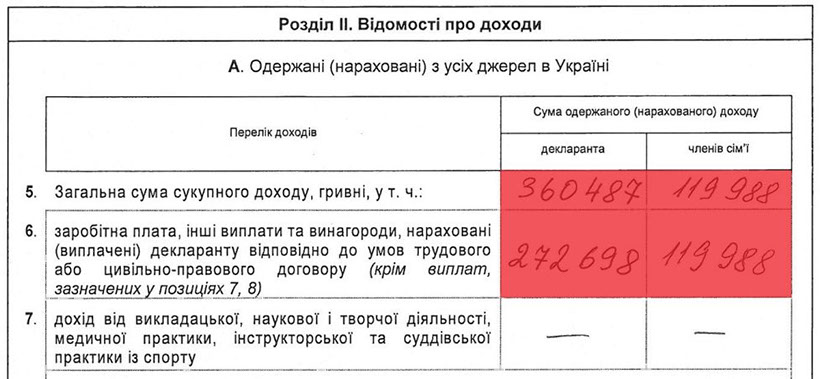
Натомість Дмитро Михайлович має у власності з 2013р. земельну ділянку площею 0,12Га у с.Крюківщина Києво-Святошинського району Київської обл., де ціна за 1 сотку навіть зараз, в умовах фінансової кризи в країні, стартує в середньому від 2-2,5тис.$ (або 25-30тис.$/12 соток).
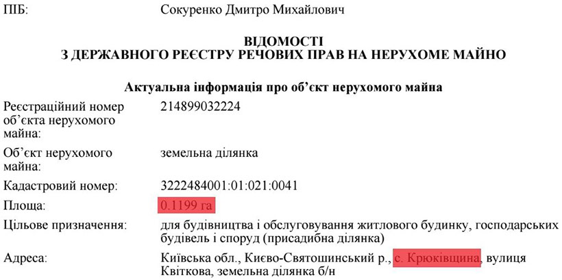
Є у Сокуренка у власності з 2010р. також і чималий будиночок на 534м² в одному з найдорожчих, Печерському районі Києва, саме що не нає на Печерських пагорбах. Розташований він буквально в 5 хвилинах ходьби(!) (400м.) від монументу "Батьківщини-Мати".
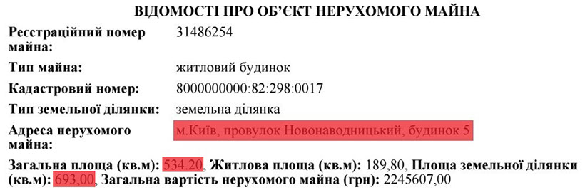
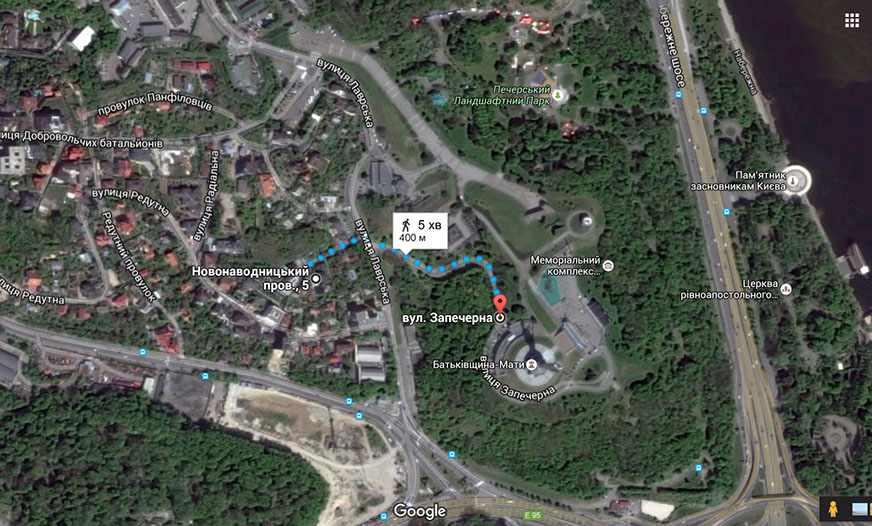
Тут ціна за сотку землі дійсно просто космос, а точніше від... 120тис.$(!) Тобто на сьогодні лише земельна ділянка (7 соток) судді Дмитра Сокуренка в даному місці коштує мінімум 840тис.$ або майже 21млн.грн.(!) Тобто із заробітною платою на рівні 2014р. пану Сокуренку знадобилося б більше 77 років працювати лише на цю земельну ділянку, не витрачаючи жодної копійки навіть на їжу :)
Ось декілька фото маєтку Сокуренка з повітря.
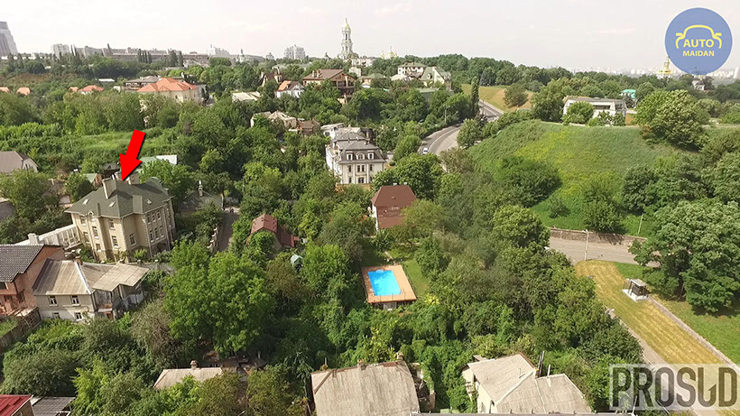
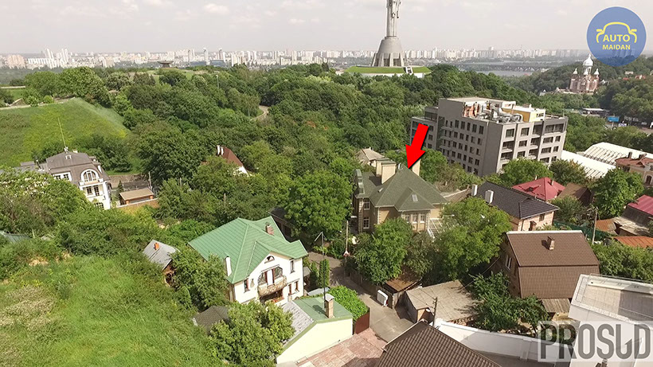
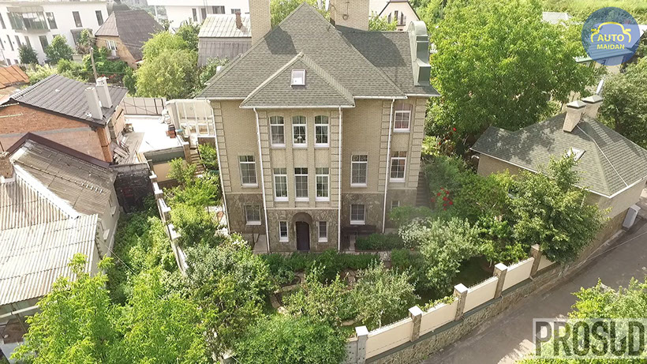
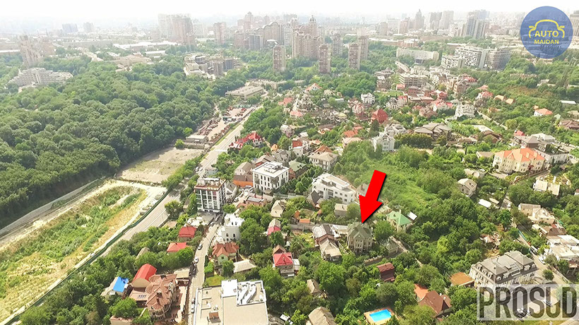
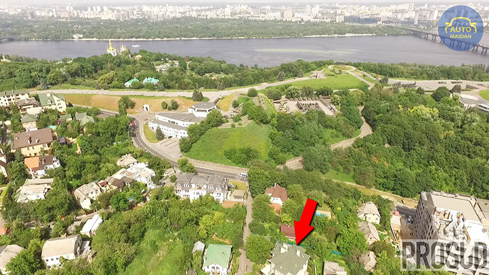
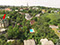
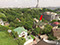
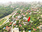
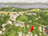
2 - 5
<
>
На нашому відео про життя суддів київських апеляційних судів він у першій частині.
За словами ж експертів, разом з будинком актуальна ціна даного маєтку на сьогоднішній день становить мінімум 1,25млн.$(!) або 31млн.грн. (114 річних заробітних плат Дмитра Сокуренка станом на 2014р.) За документами ж даний маєток у 2010р. був оцінений лише у скромні 2,245млн.грн. або 280,7тис.$ за тодішнім курсом долара США. Тобто його "офіційна" ціна була явно занижена.
Має неподалік свого будинку (на відстані 500м.) з 2010р. Дмитро Михайлович і недешеву двокімнатну квартиру на вул. Лаврській (Івана Мазепи) вартістю від 80тис.$ (2млн.грн. або більше 7 його річних заробітних плат).

У 2010р. вона була оцінена в жалюгідні, як для такої квартири, 58,8тис.грн. або 7355$(!) за курсом 8. Це просто смішно, адже подібні квартири в даному елітному місці столиці коштують на порядок більше.
"Маленький" нюанс є з цією квартирою: дивно, але в офіційній декларації за 2014р. судді Сокуренка ми даної квартири не знайшли. "Забув" вказати? :)
До речі, дружина судді Сокуренка, Шокун Світлана Миколаївна, також ще з часів "правління" Януковича і по сьогоднішній день є дисциплінарним інспектором секретаріату... Вищої кваліфікаційної комісії суддів України (яка і визначає, хто з суддів пройде кваліфікаційне оцінювання, а хто - ні). Нагадаємо, що членом цієї ж ВККС Дмитро Михайлович і був з 2010р. Показово, що Януковичем Сокуренка було нагороджено в 2011р. орденом "За заслуги" II ступеня, а Світлані Миколаївні в жовтні 2013р. Віктором Федоровичем присвоєно почесне звання "Заслужений юрист України".
Нещодавно ж, за результатами перевірки тієї ж ВККС, було встановлено, що до Шокун Світлани Миколаївни не застосовуються заборони, визначені Законом України “Про очищення влади”.
У власності ж дружини Сокуренка з 2009р. є задекларований нею житловий будинок на 183м² у Київській області в с.Черняхів.
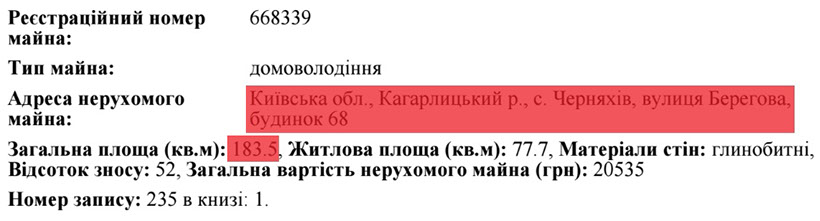
Його ми теж знайшли. Як і недешева квартира Дмитра Михайловича, маєток його дружини також був офіційно "оцінений" дуже скромно - у 20,5тис.грн. станом на 2009р. (він тоді був вже практично добудований, судячи зі знімків Google Earth). А тепер подивіться, який вигляд має будинок на "20 тисяч гривень" :)))
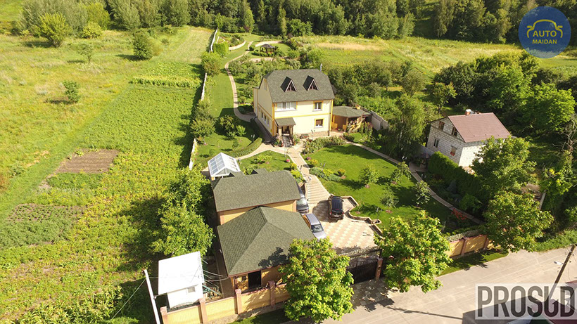
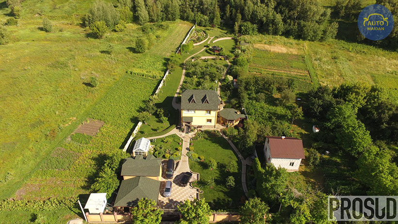
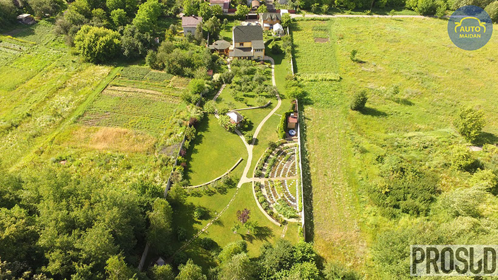
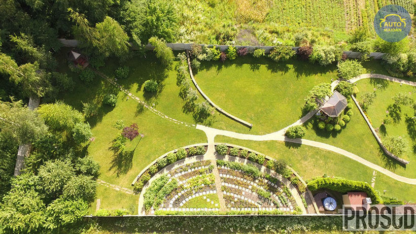
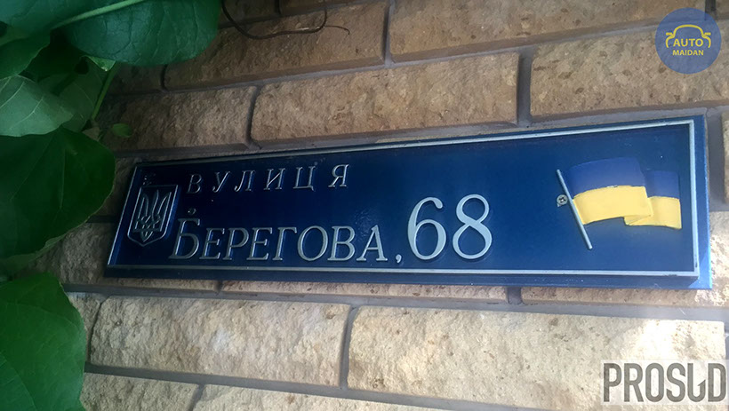
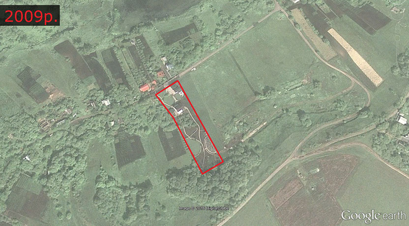
6 - 6
<
>
За словами ж будівельників, вкладено тут мінімум 300тис.$ на той час.
Автопарк у Дмитра Михайловича скромніший, ніж нерухомість.
"Лише" Toyota Prado 2.7 2004р.
та... 5-літровий(!) Chevrolet Starcraft 5.3 2004р.
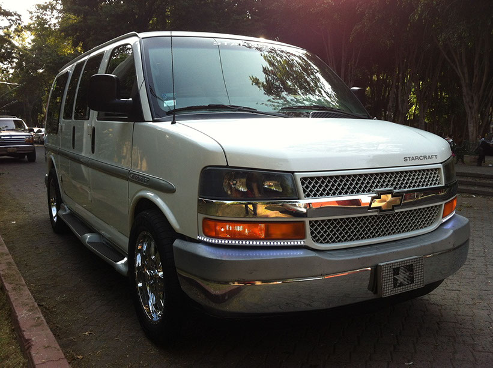
Дружина користується автомобілем HONDA CR-V 2.0 2008р.
Ми їх, до речі, і зустріли всі разом на подвір'ї в Черняхові :)
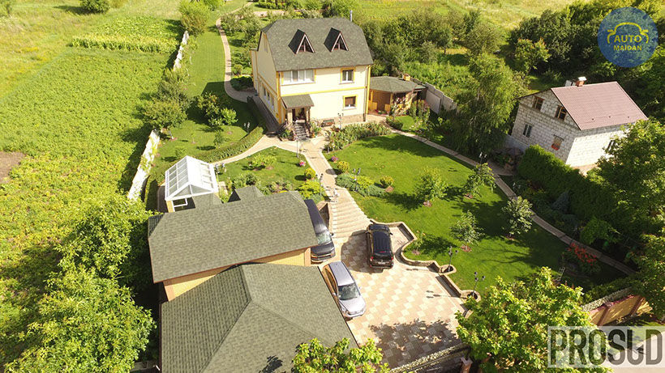

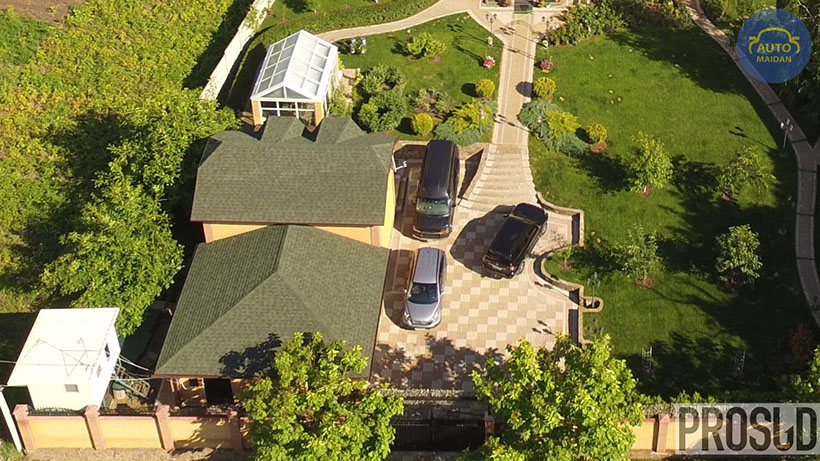
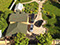
1 - 3
<
>
А от із коштами на банківських рахунках станом на 2014р. в родині Сокуренка взагалі біда - лише на 8279грн. вкладів має Дмитро Михайлович, а його дружина ж взагалі - нуль.
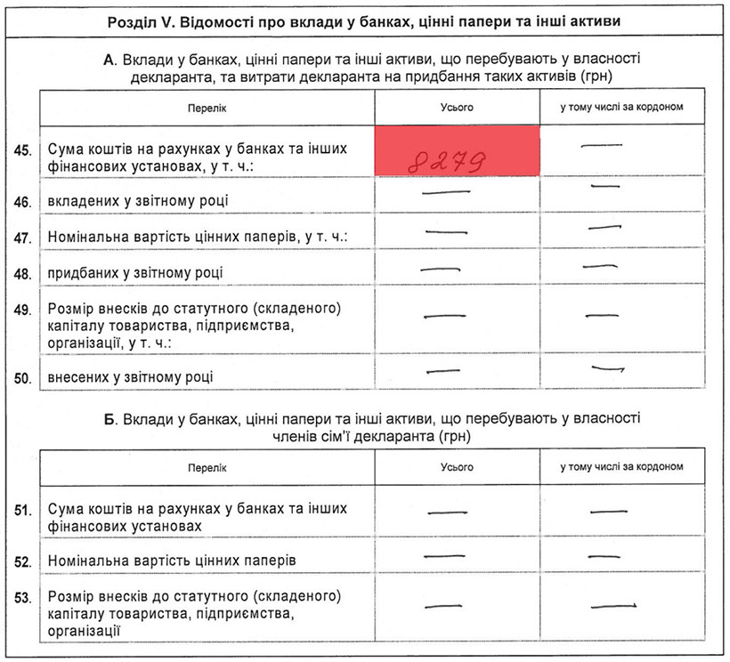
Загалом майно Сокуренка Д.М., на даний момент, можна оцінити у більш як 1,36млн.$. або майже 33,7млн.грн. (124 його річних заробітних плат). І це зараз, в умовах фінансової кризи в країні. Скільки ж воно коштувало до 2014р., можна лише здогадуватися.
Де ж взяти такі кошти людині, яка практично все своє життя пропрацювала суддею (з липня 1978р.) та начальником Головного управління юстиції у м.Києві (обіймав дану посаду з лютого 1989(!) по червень 2013рр., тобто майже 25 років)? Мабуть без проблем, якщо, наприклад, ухвалювати такі рішення на посаді судді "Іменем України", як зняття арешту з 13,1млн. швейцарських франків (13,5млн.$) судді Вищого господарського суду України Артура Ємельянова, які знаходилися на рахунках контрольованої його дружиною офшорної фірми "Restwood" (Панама) і були арештовані владою Ліхтенштейну 28 липня 2015р.
Дана інформація буде нами офіційно передана до Національного антикорупційного бюро України, Національного агентства з питань запобігання корупції, Вищої кваліфікаційної комісії суддів України та Вищої ради юстиції. PROSUD
Суддя апеляційного суду міста Києва Сокуренко Дмитро Михайлович. Розслідування «PROSUD».
Copyright © 2016 PROSUD